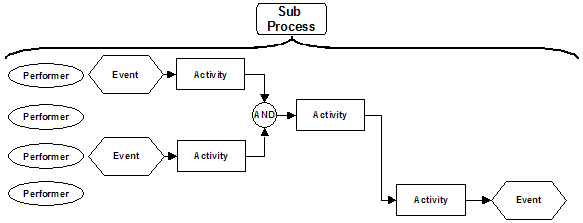
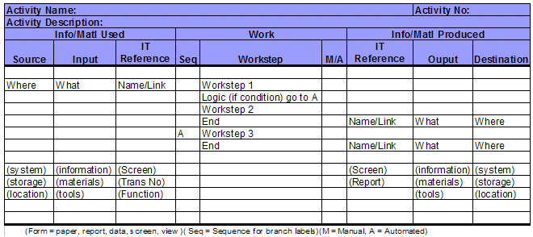

| Artifact: Site Readiness Procedures
(BUS 307f)
|
|
Purpose
The role of the procedure descriptions is to provide instructions of how to perform each activity in terms of who is
responsible, who does what, when do they do it and, what IT functions they shall use etc., this is used to:
-
Ensure standardization of processes - each individual executes the activities in an identical manner
-
Provide a reference to employees to assist them in executing their daily activities
-
Provide the foundation for training & education of staff members in both the process and enabling information
technology
-
Provide the ability to train and transfer skills to new employees on executing the process
-
Provide a reference document for communication to other affected parties
-
Provide a vehicle for business controls and management system audits
|
Description
| Main Description |
The Procedures Documentation work product identifies and documents the procedures required at the execution level of a
business process and is prepared for all activities within the business process. The execution level of a process
is the lowest description level of a business process and deals with activities and worksteps in terms of who is
responsible, what they do and how do they interact with the technology that supports them. The procedures should be
detailed enough that employees would understand how to perform their daily activities and tasks. The procedures include
the sequence of the worksteps, decision points in the activity and explanations of how to use screens/application
functions and tools that support execution of each of the worksteps.
|
| Notation |
A Procedure work product may consist of three major elements:
-
The narrative description of the process as described below.
-
The detailed process map that shows the flow of work through the process at the activity level.
-
The detailed activity procedure at the workstep level is depicted in the table depicted in Activity
Description.
Narrative Description:
Generally the following paragraph headings are used, which ensure that the form of the procedure conforms to
the relevant international or governmental standards. The actual format may be governed by national or international
standards such as ISO 9000 or by the clients internal standards, but generally the following information may be
required:
-
Title
-
Purpose: (What is to be done, including frequency when applicable)
-
Responsibilities and authorizations: (Who is involved)
-
Actions: (Who does what, how is it done and when is it applicable)
-
Documentation of resources and touch points: (What materials, equipment, documents are to be used)
-
Quality records (what information is be maintained, where and for how long)
-
General Information
-
Data Retention information (how long, where)
-
References
Process Map

When process procedures are being developed, they are typically based upon the performers and the activities performed
at the lowest level of detail. During Process design the detailed process map is prepared and is used to assist
in the definition of the procedures.
Activity Description
The following template represents the information necessary to prepare the procedure at the activity level and is
generally prepared during the detail process definition phase of an engagement. Completing the Workstep column
typically starts the template, As the process definition continues logic is added to the worksteps if necessary.
Then the IT references are completed and finally the inputs and outputs are completed. The IT references are
prepared in conjunction with the application developers to ensure that the application will provide the appropriate
functionality.

|
Illustrations
Key Considerations
-
Use the process definition documentation that already exists for the processes.
-
Training requirements for the personnel responsible for the execution of the activities needs to be identified in
detail.
-
The integration and technology touch-points in the procedures need to be highlighted.
-
Use the subject matter experts - the client staff who are actually performing the tasks. This helps ensure
that the procedure really reflects what happens, and helps to gain their 'buy-in' when new procedures and processes
are being implemented.
-
In writing procedures, take into account the skill levels of the employees who will be executing the process.
-
Test the procedure with walkthroughs and pilots where possible prior to release.
-
Train all affected staff in the new procedure.
-
Keep in mind the following points when conducting a job/task analysis:
-
A job/task analysis is not an outline of the course; rather, it is a breakdown of relevant job
accomplishments into their component tasks and subtasks.
-
A job/task analysis is not performed to identify what students need to know (subject matter content).
A content analysis, performed after the job/task analysis, identifies required content. Rather, the
job/task analysis identifies what students should be able to accomplish (produce) back on the job and the
tasks that are required to produce those accomplishments.
-
In conducting a job/task analysis, forget about what students need to know or learn during training (this
actually hinders the analysis). Instead, focus on what students need to be able to produce on the job
and on identifying the tasks they must perform to produce those outcomes.
|
Tailoring
| Impact of not having |
If this work product is not produced, then:
-
The work will be performed in an 'ad hoc' manner according to the skill level and experience of each individual and
not in accordance with how the process design team intended
-
The process might not be controlled and its output might have unacceptable variability
-
Training will be developed that is incomplete or that covers superfluous material
|
| Reasons for not needing |
There are very few instances when this work product is not required, possibly when:
-
The process is totally automated and no human activity is required
-
The work performed is based on professional qualification, training, and experience
-
New approaches to performing work are being developed which cannot yet be codified
|
| Representation Options | Note that, when identifying procedures for the purpose of creating training materials, this work product will take the
shape of a Job/Task Analysis (JTA). The JTA outlines job accomplishments hierarchically, rather than the processes that are
needed to reach these accomplishments. As organizations are typically more interested in the results of a process, rather
than in the processes by which they are reached, the JTA helps identify the objectives needed to complete training, while
avoiding material that is unessential to the organization’s training needs. |
More Information
| Checklists |
|
| Guidelines |
|
| Supporting Materials |
|
| Estimation Considerations |
|
© Copyright IBM Corp. 1987, 2012 All Rights Reserved
Property of IBM
These materials are intended only for use as part of an IBM engagement |
|